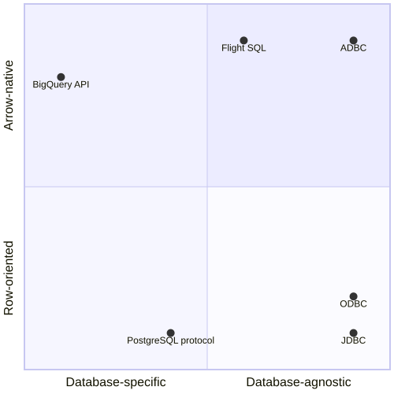

Frequently Asked Questions (FAQ)¶
What exactly is ADBC?¶
At a high level, ADBC is the standard for Arrow-native access to databases. At a lower level, ADBC is two separate but related things:
An abstract API for working with databases and Arrow data.
A set of concrete implementations of that abstract API in different languages and drivers for different databases (see Drivers).
Why not just use JDBC/ODBC?¶
JDBC uses row-based interfaces like ResultSet. When working with columnar data, like Arrow data, this means that we have to convert the data at least once and possibly twice:
Once (possibly) in the driver or database, to take columnar data and convert it into a row-based format so it can be returned through the JDBC APIs.
Once (always) when a client application pulls data from the JDBC API, to convert the rows into columns.
In keeping with Arrow’s “zero-copy” or “minimal-copy” ethos, we would like to avoid these unnecessary conversions.
ODBC is in a similar situation. Although ODBC does support “column-wise binding”, not all ODBC drivers support it, and it is more complex to use. Additionally, ODBC uses caller-allocated buffers (which often means forcing a data copy), and ODBC specifies data layouts that are not quite Arrow-compatible (requiring a data conversion anyways).
Hence, we think just extending ODBC is insufficient to meet the goals of ADBC. ODBC will always be valuable for wider database support, and providing an Arrow-based API on top of ODBC is useful. ADBC would allow implementing/optimizing this conversion in a common library, provide a simpler interface for consumers, and would provide an API that Arrow-native or otherwise columnar systems can implement to bypass this wrapper.
Why ODBC/Arrow don’t quite fit each other
ODBC provides support for bulk data with block cursors, and Turbodbc demonstrates that a performant Arrow-based API can be built on top. However, it is still an awkward fit for Arrow:
Nulls (‘indicator’ values) are represented as integers, requiring conversion.
Result buffers are caller-allocated. This can force unnecessarily copying data. ADBC uses the C Data Interface instead, eliminating copies when possible (e.g. if the driver uses Flight SQL).
Some data types are represented differently, and require conversion. SQL_C_BINARY can sidestep this for drivers and applications that cooperate, but then applications would have to treat Arrow-based and non-Arrow-based data sources differently.
Strings must be null-terminated, which would require a copy into an Arrow array, or require that the application handle null terminated strings in an array.
It is implementation-defined whether strings may have embedded nulls, but Arrow specifies UTF-8 strings for which 0x00 is a valid byte.
Because buffers are caller-allocated, the driver and application must cooperate to handle large strings; the driver must truncate the value, and the application can try to fetch the value again.
ODBC uses length buffers rather than offsets, requiring another conversion to/from Arrow string arrays.
How do ADBC and Arrow Flight SQL differ?¶
ADBC is a client API specification. It doesn’t define what goes on between your client and the database, just the API calls that you make as an application developer. Under the hood, a driver must take those API calls and talk to the actual database. Another perspective is that ADBC is all about the client-side, and specifies nothing about the network protocol or server-side implementation.
Flight SQL is a wire protocol. It specifies the exact commands to send to a database to perform various actions like authenticating with the database, creating prepared statements, or executing queries. Flight SQL specifies the network protocol that the client and the server must implement.
One more way of looking at it: an ADBC driver can be written for a database purely as a client library. (That’s how the PostgreSQL driver in this repository is implemented, for instance—as a wrapper around libpq.) But adding Flight SQL support to a database means either modifying the database to run a Flight SQL service, or putting the database behind a proxy that translates between Flight SQL and the database.
Why not just use Arrow Flight SQL?¶
Because ADBC is client-side, ADBC can support databases that either don’t support returning Arrow data, or support Arrow data through a protocol besides Flight SQL.
Then do we even need Arrow Flight SQL?¶
Flight SQL is a concrete protocol that database vendors can implement, instead of designing their own protocol. And Flight SQL also has JDBC and ODBC drivers for maximal compatibility.
As an analogy: many databases implement the PostgreSQL wire protocol, so that they can gain access to all the PostgreSQL clients, including JDBC and ODBC drivers. (And JDBC/ODBC users can still use other drivers to work with other databases.)
For the Arrow ecosystem, we hope databases will implement the Flight SQL wire protocol, giving them access to all the Flight SQL clients, including ADBC, JDBC, and ODBC drivers. (And ADBC users can still use other drivers to work with other databases.)
So what is the “ADBC Flight SQL driver” then?¶
The ADBC Flight SQL driver implements the ADBC API standard (which an application interacts with) using the Flight SQL wire protocol (which a database server exposes). So it’s a generic driver that can talk to many databases, as long as those implement Flight SQL.
This is a little unusual, in that most database drivers and database protocols you’ll find were meant for a specific database. But Flight SQL was designed to be agnostic to the database from the start, and so was ADBC.
It sounds like they overlap, but they complement each other because they operate at different levels of abstraction. Database developers can just provide a Flight SQL service, which will give them ADBC, JDBC, and ODBC drivers for free, without having to build and maintain those drivers on their own. Database users can just use ADBC as the one Arrow-native API to work with both Arrow-native and non-Arrow-native databases, whether those databases support Flight SQL, a custom Arrow-native protocol, or no Arrow-native protocol.
And then what is the “ADBC JDBC driver”?¶
The ADBC JDBC driver, or a hypothetical ADBC ODBC driver, adapts the JDBC API to the ADBC API, so that an ADBC user can interact with databases that have JDBC APIs available. While this doesn’t give you the best possible performance (you’re paying for transposing the data back and forth!), it does save you the hassle of writing those conversions yourself.
Similar libraries already exist; for instance, Turbodbc wraps any ODBC driver in Python’s DBAPI (PEP 249), and arrow-jdbc wraps any JDBC driver in a bespoke Arrow-based API.
How do all these APIs fit together?¶


We can divide APIs based on two axes: Arrow-native vs row-oriented, and database-specific vs database-agnostic.
Database-agnostic APIs are abstracted from the vendor, including ADBC, JDBC, ODBC, and to an extent Flight SQL. (Flight SQL, as discussed above, still requires specific vendor support; the xDBCs don’t.)
Database-specific APIs are made by a vendor for their system, though other systems may end up re-implementing these APIs for compatibility (as is often done with the PostgreSQL wire protocol).
Arrow-native APIs like ADBC, Flight SQL, and the BigQuery Storage API natively return Arrow data, or more generally columnar data. This can give a performance advantage for applications dealing with large volumes of data.
Row-oriented APIs like JDBC, ODBC, and the PostgreSQL wire protocol deal with a single row at a time. This can be more convenient for some types of applications
What is the ADBC driver manager?¶
The driver manager (in C/C++) is a library that implements the driver API but dynamically loads and manages multiple drivers behind the scenes. It allows applications to link to a single library but use more than one driver at a time. This avoids symbol conflicts between multiple drivers that would otherwise all provide the same ADBC APIs under the same names.
For an in-depth look, see How Drivers and the Driver Manager Work Together.
What is the ADBC SQL dialect?¶
Trick question! ADBC is not a SQL dialect. All an ADBC driver is required to do, is pass your query string to the database and get the result set as Arrow data. In that respect, it’s like JDBC. (ODBC has a “standard” SQL dialect it defines; ADBC does not do this.)
For a project that does try to tackle the problem of defining a vendor-independent query language, see Substrait.
When is the next release?¶
There is no fixed release cadence. We currently target releases every 6-8 weeks.
Once a release is tagged, the project then gives at least 72 hours for the Arrow PMC to vote on the release. Once the vote concludes, then packages are uploaded to places like PyPI, conda-forge, and so on. So even after a release, it may take some time for binary packages to be available.
When/where is 1.0? Is this project ready?¶
Different parts of the project have different version numbers. We consider certain implementations (like Go) to be “1.0”-ready, while others (like Java) are still pre-1.0. Drivers has a rough overview of the status of individual driver implementations.
Where can I learn more about the rationale for ADBC?¶
See Related Work.